Bert Spaan: software, APIs, (open) data, cartography
Some projects, past + present: combining open data, map design & community
Nuit Blanche 2013: Talking Data
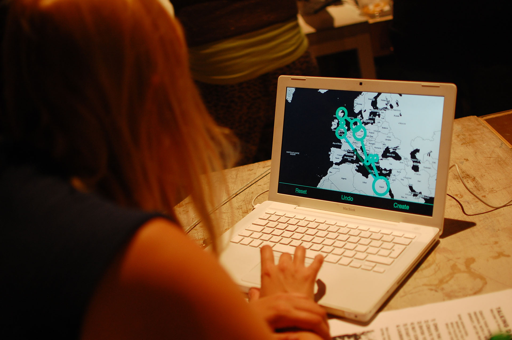Talking Data
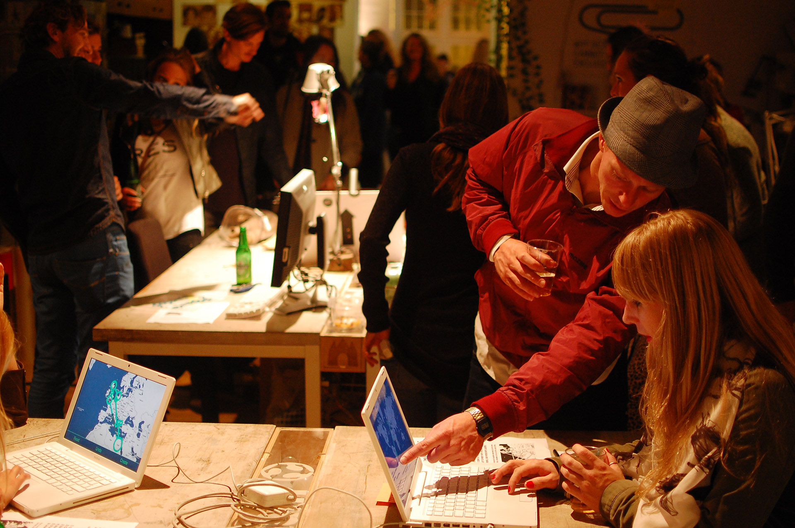Talking Data
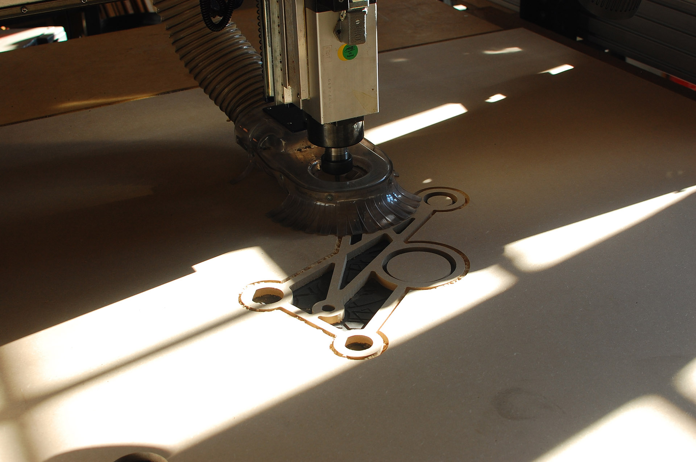Talking Data
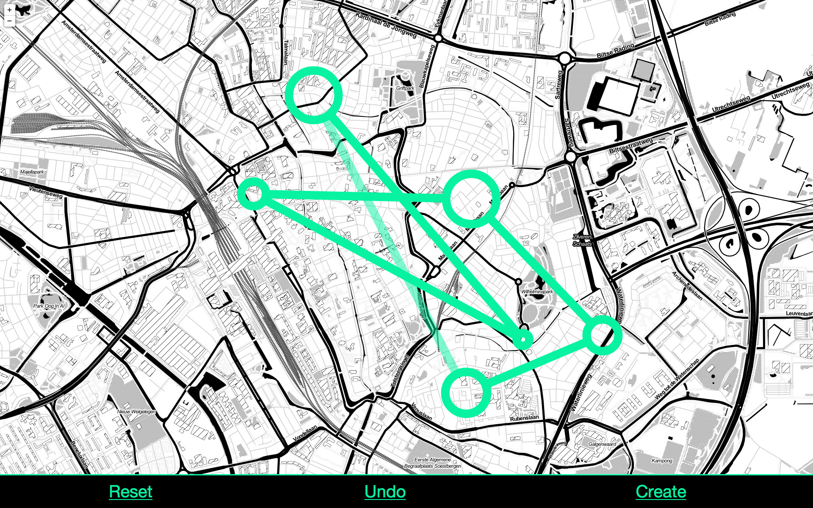Talking Data
Talking Data
Maptime Amsterdam: digital maps for all

Maptime Amsterdam
Hand-drawn maps
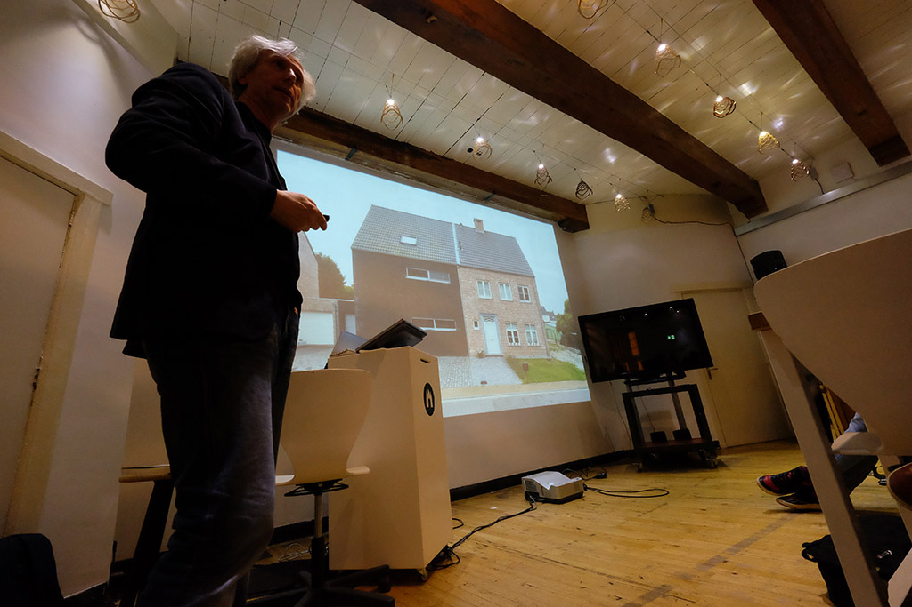Hans van der Meer
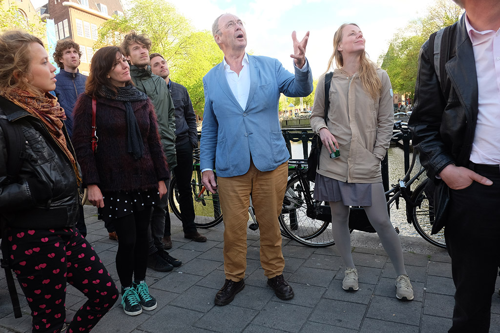Cees Holtkamp
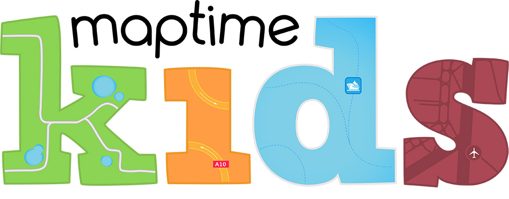Maptime KIDS

Scott Kildall

OSM Coasters
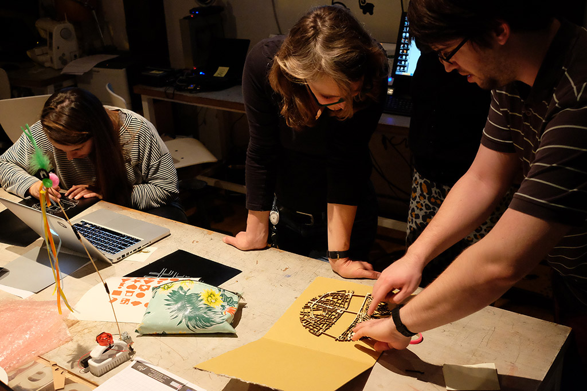Budapest
Map of all buildings in the Netherlands: visualizing open data
In the Netherlands, we have the Basisregistraties Adressen en Gebouwen (BAG)
All addresses and buildings in the Netherlands, released as open data

BAG viewer
And for each building, the BAG contains its year of construction, too!

Haarlem
And then, this happened:

WIRED
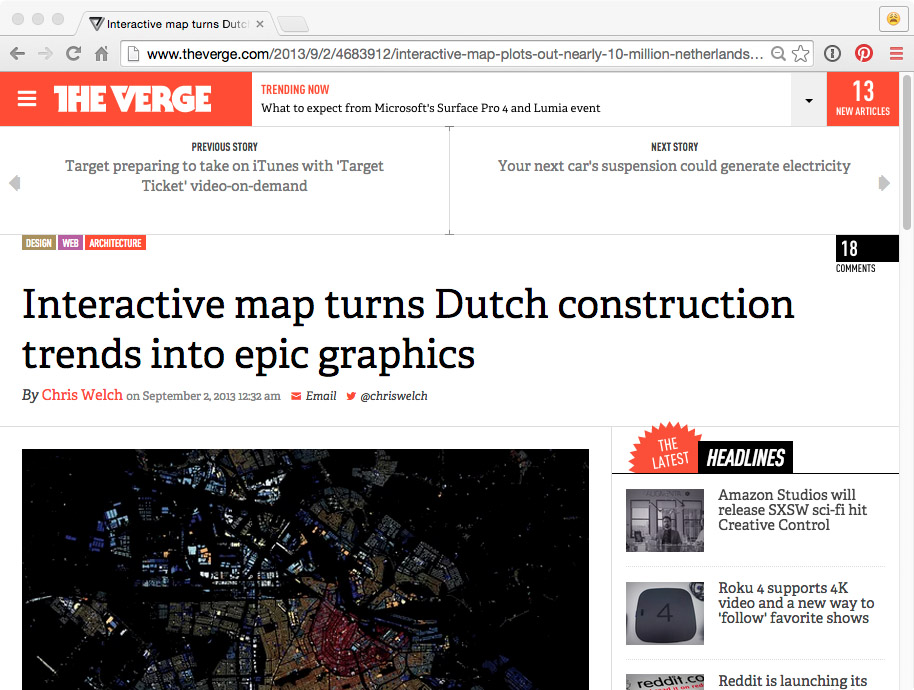The Verge
Great! But my map was pretty easy to make:
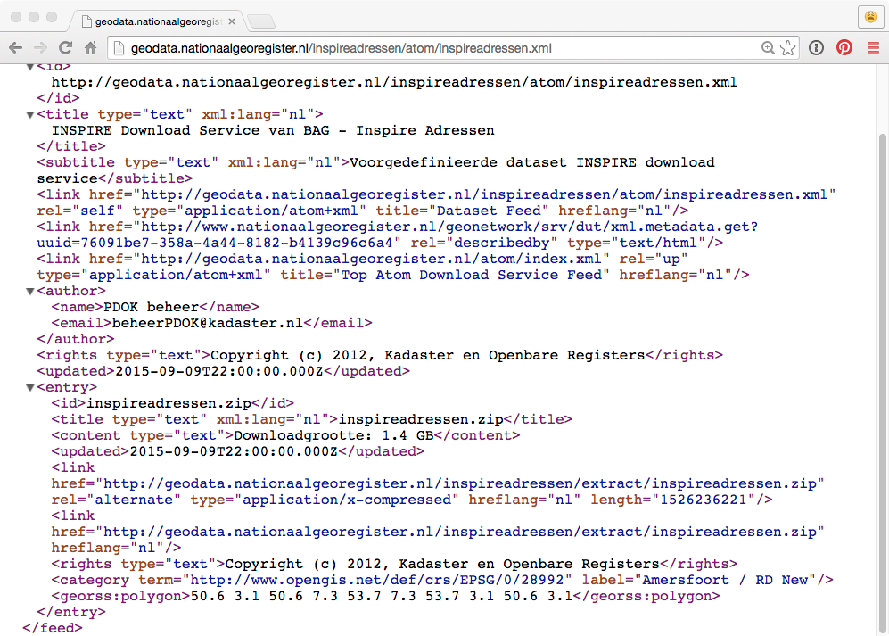BAG XML

PGAdmin

TileMill
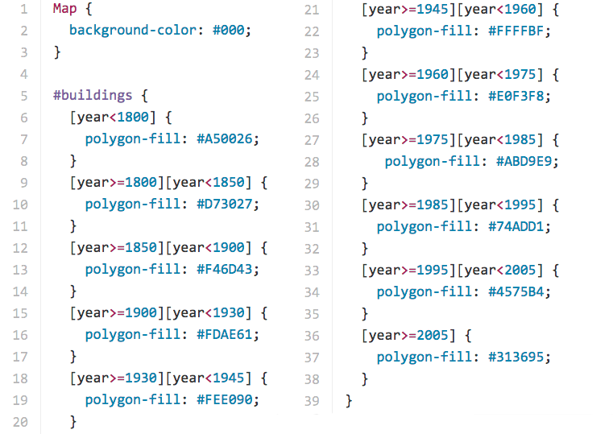CartoCSS
Only thanks to our open data laws, and hard work by municipality's surveyors and GIS departments

BAG
And open source geospatial software: PostGIS, TileMill, Leaflet
One question remains: what exactly is a building?
(This is important: the BAG is a reference data set, used by many govermental organizations)

BAG
Energielabelatlas: combining open data with proprietary data
Histograph: geocoding places of the past
Thanks!